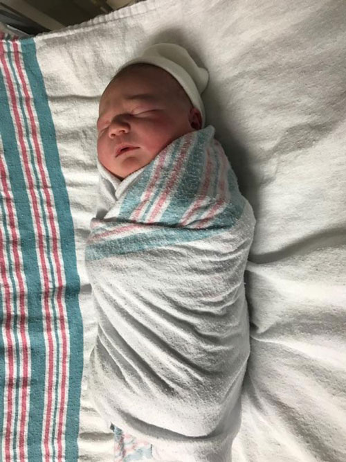
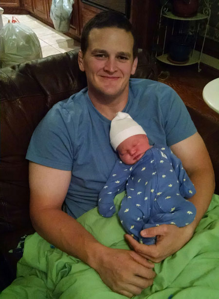
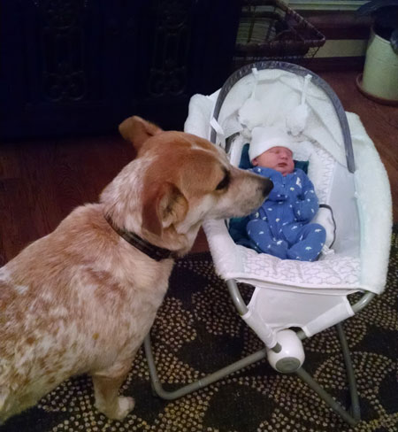
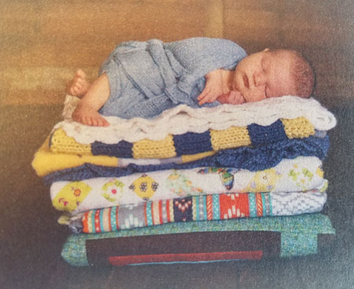
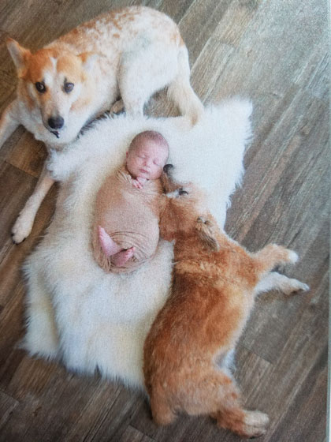
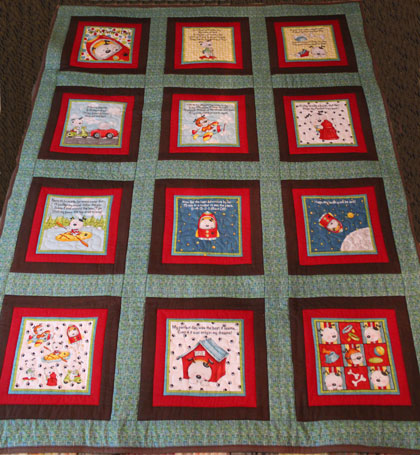
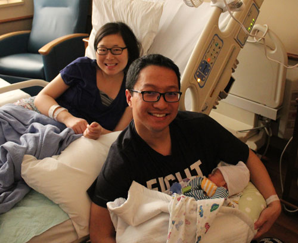
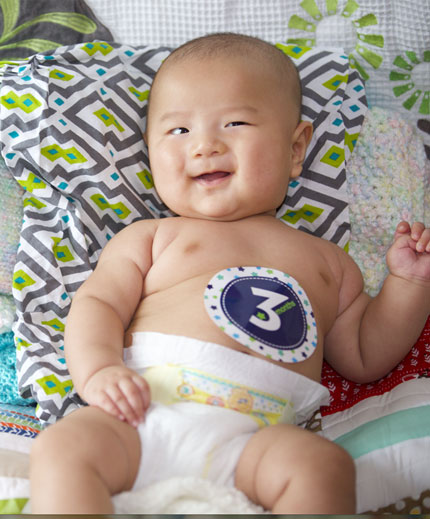
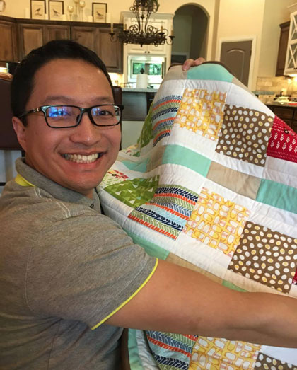
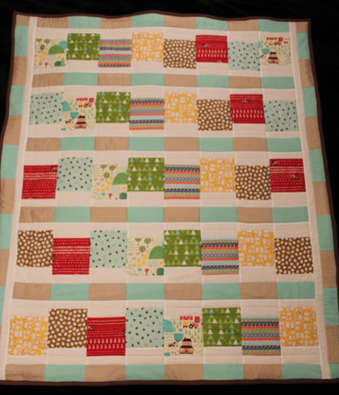

April 2017
| We were overjoyed to welcome not one, but two
new baby boys to our circle of 'honorary nephews' this month. We
give thanks for both boys arriving in good health with both mom's doing
just fine as well. This page is my own personal,
"Welcome!" to these sweet boys. |
|
Baby NathanBorn at 4:11pm April 17, 2017, 9 pounds 10 ounces, 21 inches long. |
Our good friends Rusty and Cody were blessed with this beautiful boy this
month. Baby Nathan is the answer to many, many prayers. He has top-notch care from his pediatric nurse mother, to his EMT/fireman dad, to the very protective dogs who consider him their percious little brother. He is very well looked after! |
 |
 |
| Here he is, fresh out of the oven! | Does this look like a safe place to be or what?! |
 |
|
| Hank the cow dog has his own little one to guard and protect now. | Look at those cheeks! |
 It was sweet of Cody to include the quilt I made for Natan in this adorable shot |
 |
| The new king of the household with his court in attendance. So cute!! | |
 |
|
| The quilt I made for Nathan. | |
| |
|
Baby ElimBorn at 10:30 am April 29th, 7.3 pounds, 22 inches |
Our good friends David & Rayleigh came back from China so that we could all enjoy the birth of baby Elim. He was born in a thunderstorm that knocked out the power in the hospital. On generators, everything worked except the A/C, so it was a hot experience for everyone, but safe! |
 David & Rayleigh at the hospital just before being released with little Elim |
|
| Looking adorable in his first professional photos | |
The new family |
 |
| A sneak peek ahead to his 3rd month pictures, taken in July 2017 | |
 |
 |
| David with the quilt I made for Baby Elim | Elim's quilt |